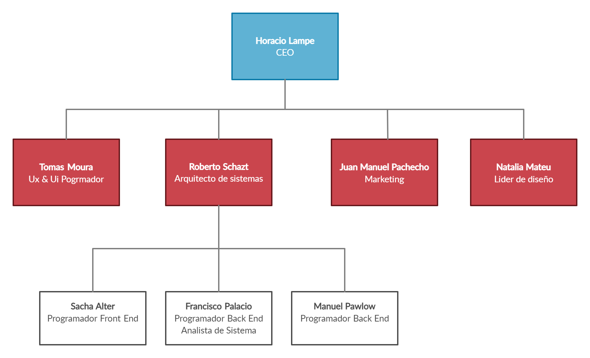
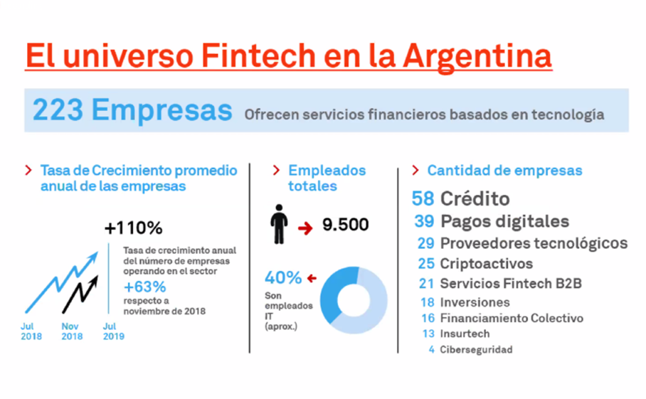

3 INTRODUCCIÓN
3.1 Presentación de la organización
3.1.1 Reseña histórica
En 2003 surge el grupo INNOVACTION, liderados por Horacio Lampe, el cual ofrece portales e Intranets basadas en DNN - DotNetNuke. Con el correr de los años logro posicionarse en el mercado y lograr acuerdos con empresas nacionales e internacionales como Swiss Medical, enap Sipetrol, Banelco, DirecTv, entre otras.
Al observar el fuerte crecimiento en el mercado fintech y con el objetivo de expandir INNOVACTION en el año 2017, Horacio Lampe, actual CEO, da inicio a Action Fintech SAS, con el objetivo de disminuir la brecha entre personas bancarizadas y no bancarizadas. Ubicada en Martínez, Buenos Aires, tiene como actividad principal transformar las financieras tradicionales o startups en Fintechs Online.
Actualmente la empresa ya cuenta con más de cinco fintechs online, y un equipo de trabajo que crece constantemente en que busca de brindar un mejor servicio para poder alcanzar el objetivo de ser líderes en el mercado.
3.1.2 Vision
Ser la primera empresa digital en la Nube que facilita una plataforma SaaS a las compañías financieras y los bancos para la mejor evaluación y onboarding cuyo objetivo es aumentar la inclusión financiera significativamente de las personas de Latinoamérica.
3.1.3 Valores
Trabajo en equipo, como forma de alcanzar logros a través del esfuerzo combinado de cada individuo.
Proactividad, visto como la forma de tomar iniciativa para generar cambios.
Innovación, como clave del crecimiento sostenido de la empresa.
Prudencia, entendida básicamente como el principio de precaución en la asunción del riesgo.
3.1.4 Actvidad
Action Fintech ofrece el software como servicio (SaaS) el cual permite:
El sistema de e-Lending es totalmente automático, permite el otorgamiento de los préstamos vía la identificación, validación y calificación del crédito a través de la Web. El cobro es por débito de cuenta.
Podrá otorgar préstamos sin la intervención de personal. Sus clientes podrán acceder a su servicios de manera ágil las 24 horas del día los 365 días del año desde cualquier lugar del país.
El proceso de solicitud y otorgamiento del crédito es 100% online. El usuario carga los datos, el sistema los valida y en base las reglas de negocio preestablecidas se otorga el préstamo vía transferencia bancaria por CBU.
Diseñamos una plataforma exclusiva centrada en la experiencia del usuario UX/UI. Le brindamos soporte técnico las 24 horas para dar rápida solución a sus inconvenientes.
Contamos con un Motor de Inteligencia Artificial y Big Data para toma de decisiones en tiempo real. Se reduce el riesgo, simplifica el proceso y facilita la tarea de control y seguimiento.
Planificación de estrategias de comunicación y posicionamiento de marca. Implementación, seguimiento y optimización de campañas publicitarias en Google Ads y Facebook Ads.
3.1.5 Organigrama

3.1.7 Análisis del sector de la empresa
Segun la Camara Fitnech, Argentina es cuna de grandes emprendimientos y motor para el desarrollo de la innovación, y se presenta como un escenario propicio para el crecimiento de Fintech que apunten a diseñar y brindar servicios de alcance regional.(Informe-Ecosistema-Fintech-Argentino,p.16)
Fuente: https://camarafintech.com.ar/wp-content/uploads/2019/06/Informe-Ecosistema-Fintech-Argentino.pdf
3.2 Descripción del tema
Segun Ignacio E. Carballo, en el mundo, sólo el 62% de la población adulta posee una cuenta bancaria. Esto implica que 2 billones de personas no poseen antecedente financiero alguno ni cuentan con identidad financiera para ser analizados. Son, a priori, agentes “no confiables” para el análisis financiero tradicional (https://www.portfoliopersonal.com/Research/Noticia/5644). En Argetina de acuerdo al Informe de Inclusión Financiera publicado por el Banco Central de la República Argentina, el 80% de los adultos cuenta con al menos una cuenta bancaria, sólo la mitad de la población reconoce estar bancarizada y hacer uso de estos servicios.
En los sistemas financieros tradicionales, la métrica de confianza frente a lo desconocido se adquiere mediante la calificación crediticia (o “Credit Score”). El historial crediticio se refiere al informe que realizan los analistas de centrales de riesgo(buró de crédito) y que refleja al comportamiento respecto a deudas que pueda tener un solicitante de crédito, ya que en el informe figura su nivel de cumplimiento como en el pago de cuotas de préstamos, si mantienen deudas o cuotas impagas, si suelen usar al pago mínimo de la tarjeta, además de otros factores. En base a dicha información es que las entidades como bancos o financieras pueden conocer el perfil de sus clientes o posibles clientes y decidir si conviene o no prestarles el crédito o préstamo.
El problema que presenta gran porcentaje de la población Argentina que si bien tienen cuenta bancaria, en su mayoría no utilizan servicios financieros básicos por lo que no cuentan con historial crediticio real en el Banco Central de la República Argentina (BCRA). Según Juan Pablo Bruzzo, Presidente de la Cámara Argentina de Fintech, “Tan vasto es el segmento poblacional que aun teniendo cuenta en algún banco no accede a los servicios financieros más básicos, que resulta ser una de las principales razones por las que Argentina tiene tan bajo desarrollo del mercado de crédito. Según los últimos datos del Banco Mundial, la participación de los préstamos al sector privado en la Unión Europea llega a 94,6% del PBI, en América Latina y el Caribe a 44,9%, mientras que en Argentina representaba apenas el 14,3% del PBI nacional”(https://www.tynmagazine.com/nuevos-modelos-de-scoring-favorecen-la-inclusion-financiera/),
3.3 Objetivo del trabajo
A raíz de lo planteado surge la necesidad de Desarrollar un Score Crediticio Alternativo a los buró de crédito tradicionales, que permita determinar, en base alrededor de más de mil préstamos activos e información obtenida de más de cien mil solicitantes de cinco financieras distintas, la probabilidad de mora de la persona interesadas en sacar un crédito.